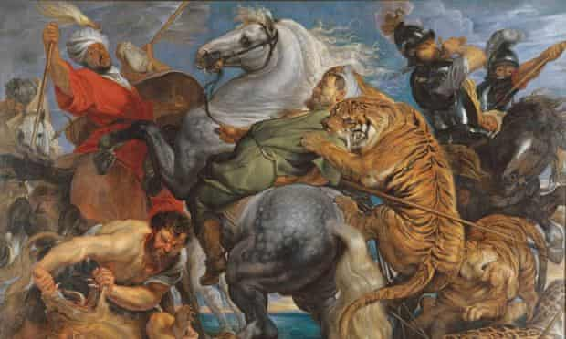

Bottom Line up Front
The Baroque style flourished in Europe in the 17th century and early 1700’s. This style of art, architecture, music, and dance used extraordinary detail, movement, and contrast to inspire a sense of awe. It was largely inspired as a means to counter the simplicity of the protestant forms of art and architecture that had preceded it.
I believe we are experiencing a revival of the Baroque style with technology in general, and specifically within software development. There appears to be an ever-increasing focus on tech features, visuals, and convenience which is analogous to the elaborate artistry of the Baroque.
I do not believe this will be the lasting direction of technology, and certainly not software. In contrast, I expect a shift towards functionality and minimalism, perhaps akin to the architectural styles of the American shakers.
Thoughts
The apartment I rent had a Nest thermostat when my family moved in. It broke a few months into our lease, which I was surprisingly happy about, because we were able to replace it with an ordinary, ‘dumb’ thermostat. But the troubleshooting phase really worried me.
When I called the Nest support number to diagnose the problem, they couldn’t offer any support unless I shared with them my account details. I didn’t have a Nest account (I’m guessing our landlord did). As a result, I ended up going in circles on the phone for over an hour while the person on the line kept trying to convince me to create a Nest account, and then share my credentials with them so they can ‘see what’s going on.’ I was irate. I kept thinking to myself: why on earth do I need to create an account to operate a thermostat?
Meanwhile, I had a load of laundry in the dryer. It didn’t run the entire 45 minutes I had set it to run. Instead, it recognized that the clothes in it were damp enough to now be air dried, stopped running, and prompted me by playing the first few notes of Beethoven's 5th symphony. Similar to my frustrations with the Nest, I thought to myself: why on earth is my dryer not running the cycle I set for it, and why is it playing music?
Am I going crazy?
Perhaps. But if so, I’m not alone.
Examples of technology being maddeningly over-featured have become commonplace. In fact, I was just reading a thread about this on Hacker News the other day. Someone has made a post about how their ‘fridge just emailed them to say they had opened the doors too many times in the last month.’ They post spurred hundreds of comments from people recounting similar experiences.
https://news.ycombinator.com/item?id=28478438
One would expect these elaborate features and privacy grabs (a frightening topic for another post) to be a part of some scheme to make a company more money. Even though I feel that is an unethical means to generate revenue, I would at least understand it. In the case of the Nest, for instance, if they have my account they could sell my contact info to generate revenue. But what frightens me more, however, is that the majority of these features appear to have no possible link to revenue potential. That's to say they are added features for the sake of adding complexity. This is why I believe we are in a revitalization of the Baroque.
Consider my dryer for example. How could Bosch possibly make more money by adding a feature that stops dryer cycles and plays music? The reduced drying cycles would extend the life of the dryer itself, which would suggest less Bosch dryers (or repair parts) are being purchased during a customer’s lifetime. And there is no conceivable explanation for how the silly Beethoven music could cause a customer to spend more on a recurring basis. Has anyone honestly made a purchase decision on a dryer because of the silly music it plays when it's done running?
The same argument could be made for the person who complained about their fridge emailing them about the number of times the door had been opened. How could that feature, and those emails, possibly generate more revenue from that individual? The more likely explanation is that we are simply in a ‘feature craze,’ so to speak, specifically designed to add complexity to technology. It is very much analogous to the Baroque.
Consider, for example, a telling work of the Baroque: Peter Paul Rubens’ Tiger, Lion, and Leopard Hunt.

At first glance, it feels difficult to even know where to focus on this scene. Every single object in the scene is in motion; all objects are brought to the foreground. As a result, nothing in this image specifically stands out as the center of the story. It is a Wrestlemania of burly hunters and savage animals that has as much in common with a modern grindhouse film as it does with classical painting. (To be clear: I am not criticizing this painting. It's awesome. I love it for the very same reasons I love a good Jean Claude Van Damme film.)
But honestly compare the aesthetic of this classic painting to a modern ‘news’ webpage. I just opened CNN, hopefully for the last time ever, and found it to be much the same. There are over a hundred headlines jammed on the page. No depth. Nothing front and center. There are pop-ups and videos playing without me having clicked on them. Text in bold. Text in red. It's a maelstrom! CNN, like Ruben’s works, feels more about complexity and sensationalism than it does substance.
Admittedly, CNN is an easy target. But substitute CNN in the example above with your software of choice and I think you’ll be able to reach a similar conclusion. Better yet, substitute CNN in the example above with your hardware, appliance, or car of choice. It's become so easy to find examples of senseless, baroque-style features in our everyday lives; It's our current era of technology.
The only constant is change. The current era of baroque-style technology won’t last. Over the coming decade, I expect a shift towards functionality and minimalism, perhaps akin to the architectural styles of the American shakers. In particular, there are a few characteristics I expect to be on the rise with technology, and again, specifically with software. In no particular order:
- Simple - products that do exactly what they are asked, with no added fluff, will win in their respective markets
- Open - products that allow the owners to study, alter, and repair them freely will become increasingly popular
- Private - at some point, Americans are going to wake up and realize that they are living in an Orwellian state -- and they won’t like it. Privacy, as a feature, will make a major comeback.
- Anonymous - Same as above
- Non-addictive - Similar to the above two points, it's only a matter of time until Americans reject the dark patterns that are commonplace on the web
- Non-quantified - Likes are bad for mental health. They’ll be dropped as a feature going forward
- Not-free - I also expect Americans will come to appreciate that ‘free’ products are only ‘free’ because their privacy is being violated and their data is being sold. They’ll not only be comfortable with paying for products, they’ll want to do so to have a guarantee of privacy.
Of course… all of this is just a silly ‘Ben rant.’ I could be wrong about it all. But wouldn’t it be nice, ten years from now, to have simple, open, honest technologies? Until then, I guess I’ll have to keep arguing with thermostat phone reps who want my PII and dealing with a dryer that plays Beethoven to let me know it didn’t follow the instructions I had passed to it.